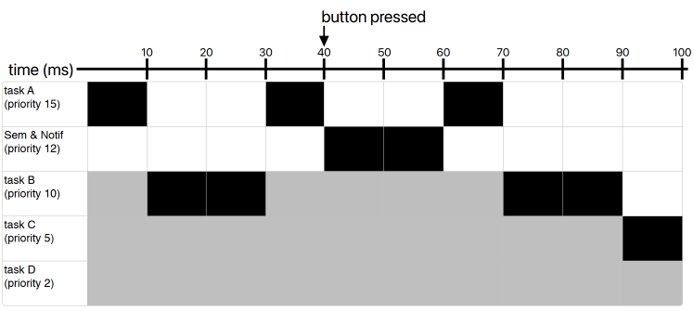

This project evaluates the real-time response of an event on an ESP32 running FreeRTOS, under the theme of an emergency stop (E-Stop) system on a theme park ride. The experiment compares two ISR-to-task signaling mechanisms: a binary semaphore and a direct task notification. It then measures their response latency both with and without background load tasks. The goal is to determine how CPU workload affects the time between an E-STOP button press and the execution of the response task.
The system is an ESP32-based real-time E-Stop response experiment implemented using FreeRTOS. The primary purpose of the system is to measure how background CPU workload and the choice of ISR-to-task signaling mechanism affect E-STOP response latency.
When the E-Stop button is pressed, a GPIO interrupt service routine (ISR) executes and signals the E-Stop bottom-half response task. Two signaling mechanisms are evaluated: a binary semaphore and a direct task notification. The experiment is performed under two workload conditions: with the background load tasks disabled and with the background load tasks enabled. This allows the effect of CPU workload and task scheduling on the end-to-end E-STOP response to be measured.
The system runs the E-STOP response and background workload on the same processor core so that the experiment can evaluate the effect of competing CPU workload on response latency.
E-STOP Button
|
v
GPIO Interrupt
|
v
GPIO ISR
|
+-------------------------+
| |
v v
Binary Semaphore Direct Task Notification
| |
v v
E-STOP Bottom-Half E-STOP Bottom-Half
Task (Priority 12) Task (Priority 12)
| |
+------------+------------+
|
v
E-STOP Response
The GPIO ISR is intentionally kept short. Its primary responsibility is to detect the E-STOP event and signal the appropriate bottom-half task. The more substantial response processing is deferred to the FreeRTOS task, reducing the amount of work performed in interrupt context.
The binary semaphore and direct task notification paths are evaluated as alternative ISR-to-task signaling mechanisms. The resulting response latencies are measured and compared under both unloaded and loaded system conditions.
The image below shows a concurrency diagram of when the system is running. The black segments mean the task is running, the gray means it is ready, and the white means it is blocked. The timeline assumes the button is pressed at 40 ms, which causes the semaphore and notif tasks to run.
The scheduler determines which ready task executes based on FreeRTOS priority rules. Because the E-Stop response tasks have priority 12, tasks B, C, and D cannot preempt them. However, Task A has priority 15 and can preempt the E-STOP bottom-half task when Task A becomes ready. This interaction is a key reason for measuring E-STOP response latency under background workload.

| Task | Core | Priority | Period / Trigger | Function |
|---|---|---|---|---|
| load_task_a | 1 | 15 | 10 ms | Background CPU Load |
| load_task_b | 1 | 10 | 20 ms | Background CPU Load |
| load_task_c | 1 | 5 | 50 ms | Background CPU Load |
| load_task_d | 1 | 2 | 100 ms | Background CPU Load |
| button_isr | 1 | ISR | Button Press | Captures E-STOP event and signals bottom-half |
| btn_task_sem | 1 | 12 | Event-driven | Handles E-STOP through binary semaphore |
| btn_task_notif | 1 | 12 | Event-driven | Handles E-STOP through direct notification |
Task A has priority 15, which is higher than the priority-12 E-STOP bottom-half tasks. As a result, Task A can preempt an E-STOP bottom-half task when it becomes ready to run. Tasks B, C, and D have lower priorities than the E-STOP bottom-half tasks and therefore cannot directly preempt them. This priority structure allows the experiment to demonstrate how real-time scheduling and competing workload can affect E-STOP response latency.
| Task | Priority | Period | Maximum Observed Execution Time (µs) |
|---|---|---|---|
| Load Task A | 15 | 10 ms | 363 |
| Load Task B | 10 | 20 ms | 62,876 |
| Load Task C | 5 | 50 ms | 132,977 |
| Load Task D | 2 | 100 ms | 1,386,682 |
These values represent the maximum observed execution times during the test run and should be interpreted as observed WCET measurements rather than formally proven worst-case execution times.
Hazard analysis identifies potential failure modes that could delay, prevent, or incorrectly trigger the E-STOP response. Each hazard is evaluated based on its cause, potential consequence, and mitigation implemented or demonstrated by the system.
| Hazard | Cause | Potential Consequence | Mitigation |
|---|---|---|---|
| E-STOP response delayed | A higher-priority task preempts the E-STOP bottom-half task, delaying its execution. | The system may take longer to enter a safe state after an emergency-stop event. | The E-STOP bottom-half task is assigned priority 12. Response latency is measured under both idle and CPU-loaded conditions to evaluate timing behavior. |
| E-STOP event not properly handled | The signaling mechanism may not provide the desired event behavior under repeated or closely spaced button presses. | An emergency event could be delayed or fail to produce the expected bottom-half response. | This project evaluates two signaling primitives: a binary semaphore and a direct task notification. The signaling mechanisms are compared using measured response latency, and the most effective is implemented. |
| Excessive ISR execution time | Too many operations are performed inside the interrupt service routine. | Interrupt latency would increase and overall system responsiveness may decrease. | The ISR performs minimal processing and defers the main emergency-stop response to a bottom-half task. |
| False E-STOP triggers | Mechanical button bounces from a single physical button press. | The system may process multiple E-STOP events for one physical action. | A 200 µs debounce interval is applied in the ISR to reject closely-spaced button reads. |
| Delayed task wake-up after ISR | The ISR signals the bottom-half task but does not request an immediate context switch. | The E-STOP response may be delayed until the currently running task yields or is preempted. |
portYIELD_FROM_ISR() is used to request an
immediate context switch when a higher-priority task was
unblocked. Removing this call is used as an induced failure
experiment.
|
| Task starvation | Excessive CPU demand from high-priority tasks prevents lower-priority tasks from receiving sufficient processor time. | Background processing may fail to meet timing requirements, potentially affecting system responsiveness. | Tasks are assigned explicit priorities and periods. Maximum observed execution times are measured to characterize the workload and identify potential scheduling concerns. |
The hazard analysis demonstrates that real-time correctness depends not only on the interrupt handler itself, but also on task priorities, processor utilization, inter-task signaling, and scheduling behavior. The measured timing results and induced-failure experiment provide evidence of how these factors can affect the responsiveness of an emergency-stop system.
The project is designed as an educational demonstration of real-time emergency-stop behavior and is not intended to claim certification or compliance with any safety standard. The system is evaluated against concepts relevant to ASTM F2291, which provides safety guidance for designing amusement rides and devices. The project applies these concepts to a simplified real-time emergency-stop system to demonstrate how real-time software behavior can contribute to safety-related functions.
| Standard / Concept | Project Application | Evidence |
|---|---|---|
| Emergency Stop / Safety-Related Controls | The system models an emergency-stop function in which a physical button generates an interrupt that initiates a safety response. | GPIO button input, ISR, and dedicated E-STOP bottom-half task. |
| Safety-Related System Response | The design emphasizes predictable and timely response to an emergency event. The interrupt handler performs minimal work and defers processing to a dedicated FreeRTOS task. | ISR-to-task signaling and measured E-STOP response latency under idle and CPU-loaded conditions. |
| Fault and Failure Considerations | The project evaluates how a failure in the real-time response path can degrade system behavior. |
Induced failure by removing portYIELD_FROM_ISR(),
resulting in increased E-STOP response latency.
|
| Risk Reduction Through Safety Functions | The E-STOP function is treated as a dedicated safety-related response separate from normal background processing. | Dedicated E-STOP bottom-half task with a priority of 12 and explicit ISR-to-task communication. |
The latency experiment is performed in two configurations controlled by the
WITH_LOAD compile-time setting. This allows the same E-STOP
response system to be tested both without background workload and with
controlled real-time background workload.
When WITH_LOAD is set to 0, the four periodic
background workload tasks are not created. The E-STOP response system runs
without the additional application-level CPU workload used in the loaded
experiment.
#define WITH_LOAD 0This configuration provides the baseline latency measurements for the two ISR-to-task signaling mechanisms. The E-STOP button is pressed repeatedly using both a direct task notification and a binary semaphore, and the response latency is recorded.
| Signaling Mechanism | Background Load | Measured Response Latency |
|---|---|---|
| Direct Task Notification | Disabled | 30 µs |
| Binary Semaphore | Disabled | 2,309 µs |
The unloaded configuration establishes the baseline response behavior of the E-STOP system before additional periodic workload is introduced.
When WITH_LOAD is set to 1, four periodic
background workload tasks are created on the same processor core as the
E-STOP response system. These tasks provide controlled CPU workload and
allow the effect of task scheduling and processor contention on E-STOP
response latency to be evaluated.
#define WITH_LOAD 1The same E-STOP latency measurements are repeated using both signaling mechanisms. The only experimental change is the addition of the periodic background workload.
| Signaling Mechanism | Background Load | Measured Response Latency |
|---|---|---|
| Direct Task Notification | Enabled | 3,018 µs |
| Binary Semaphore | Enabled | 422 µs |
The loaded configuration demonstrates that the measured E-STOP response latency can change significantly when competing real-time workload is introduced. The results also show that the relative latency of the two signaling mechanisms changes between the unloaded and loaded conditions.
| Background Load | Direct Task Notification | Binary Semaphore |
|---|---|---|
| WITH_LOAD = 0 | 30 µs | 2,309 µs |
| WITH_LOAD = 1 | 3,018 µs | 422 µs |
The results demonstrate that the signaling mechanism cannot be evaluated independently from the scheduling environment in which it operates. The addition of background workload changes the observed end-to-end response latency, and the relative performance of the two signaling mechanisms also changes between the two configurations.
The primary engineering question investigated by this project is how real-time workload and ISR-to-task communication mechanisms affect the response latency of a safety-related emergency-stop event.
The WITH_LOAD = 0 configuration establishes the baseline
behavior of the system without the four periodic background tasks. When
WITH_LOAD = 1, the additional tasks execute on the same
processor core and compete for processor time according to their FreeRTOS
priorities and release periods.
The measured results demonstrate that adding workload can substantially change the E-STOP response latency. Direct task notification increased from 30 µs without background load to 3,018 µs with background load. The binary semaphore measurement changed from 2,309 µs to 422 µs. Therefore, the effect of workload is not simply a uniform increase in latency across all signaling mechanisms.
Under the unloaded configuration, direct task notification produced the lowest measured response latency. Under the loaded configuration, the binary semaphore produced the lower measured latency in this experiment. This result demonstrates that the end-to-end response time of a real-time system depends on the interaction between the signaling mechanism, task priorities, task release timing, processor workload, and scheduler behavior.
The results should therefore not be interpreted as showing that one primitive is universally faster than the other. Instead, they demonstrate that the behavior of a synchronization or signaling mechanism must be evaluated in the context of the complete real-time system.
The background workload consists of four tasks with different priorities and periods. Task A has priority 15, while the E-STOP bottom-half task has priority 12. Tasks B, C, and D have priorities below the E-STOP bottom-half task.
| Task | Priority | Period | Relationship to E-STOP Task |
|---|---|---|---|
| Task A | 15 | 10 ms | Higher priority; can preempt E-STOP task |
| E-STOP Bottom Half | 12 | Event-driven | Safety-related response task |
| Task B | 10 | 20 ms | Lower priority than E-STOP task |
| Task C | 5 | 50 ms | Lower priority than E-STOP task |
| Task D | 2 | 100 ms | Lower priority than E-STOP task |
This priority arrangement creates a controlled scheduling environment for the experiment. Task A is capable of preempting the E-STOP bottom-half task, while Tasks B, C, and D cannot directly preempt it. The resulting response latency therefore depends on the timing of task releases and the processor state when the E-STOP event occurs.
The most important result of the experiment is that real-time response cannot be characterized solely by the nominal execution overhead of an individual API or signaling primitive. The measured E-STOP latency is an end-to-end property of the complete system.
The experiment demonstrates three important engineering considerations:
These findings support the use of measured timing evidence when evaluating real-time safety-related functions. A signaling mechanism that performs well under an unloaded test may not necessarily produce the same relative behavior under realistic system workload. For this reason, real-time systems should be evaluated under representative operating conditions and with the expected concurrent workload enabled.
The central result of this experiment is that the E-STOP response latency depends on both the ISR-to-task signaling mechanism and the workload executing concurrently on the processor. The four test cases provide a direct comparison of these factors and demonstrate why real-time system performance must be evaluated at the system level rather than by examining individual software primitives in isolation.
During normal operation, the GPIO ISR detects the emergency-stop button press,
signals the E-STOP bottom-half task, and calls
portYIELD_FROM_ISR(). This allows the newly unblocked
higher-priority task to execute immediately rather than waiting for the
currently running task to yield or be preempted.
Button Press
↓
GPIO ISR
↓
Signal E-STOP Bottom-Half Task
↓
portYIELD_FROM_ISR()
↓
Immediate Context Switch
↓
E-STOP Response
To evaluate the effect of real-time scheduling behavior on the emergency-stop
response, a fault was intentionally introduced by removing the
portYIELD_FROM_ISR() call from the ISR.
Button Press
↓
GPIO ISR
↓
Signal E-STOP Bottom-Half Task
↓
No Immediate Context Switch
↓
Current Task Continues
↓
E-STOP Bottom-Half Task Runs Later
↓
Delayed E-STOP Response
| Condition | Measured Latency |
|---|---|
Normal operation with portYIELD_FROM_ISR() |
422 µs |
Failure injected: portYIELD_FROM_ISR() removed |
2,595 µs |
Removing portYIELD_FROM_ISR() increased the response
latency from 422 µs to 2,595 µs, proving a significant
decline in emergency-stop response time. The failure demonstrates that
correct ISR-to-task scheduling behavior is important for achieving an effective
real-time response.
After the induced failure test, portYIELD_FROM_ISR() was restored
to the ISR, and the system returned to its normal state.